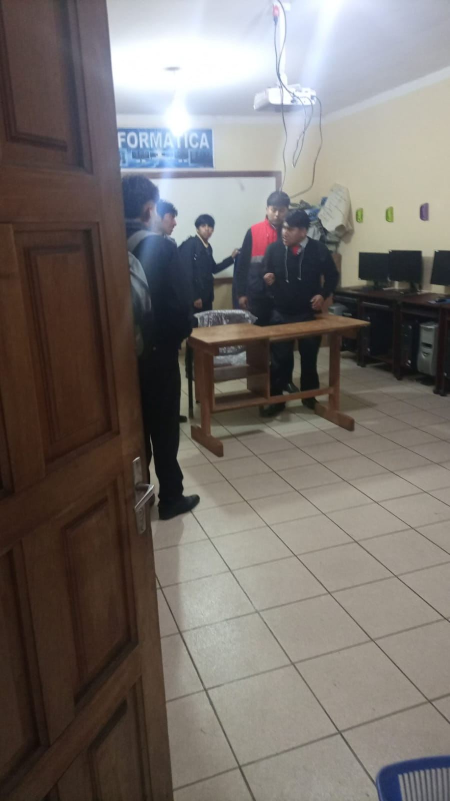

INSTITUTO TECNICO COMERCIAL FE Y ALEGRIA
ITEC
ESTUDIANTES

Los estudiantes de sistemas informáticos son el motor principal de la transformación tecnológica en la sociedad actual. Su papel es fundamental, ya que representan a las futuras generaciones de profesionales que diseñarán, implementarán y mantendrán las herramientas digitales que impulsan prácticamente todos los sectores. No solo son receptores de conocimiento, sino también agentes activos de innovación y resolución de problemas.
Estos estudiantes deben desarrollar un equilibrio entre habilidades técnicas, como la programación, la gestión de redes y la ciberseguridad, y competencias transversales, como el pensamiento crítico, la creatividad y el trabajo en equipo. Su formación no se limita a aprender a utilizar tecnologías existentes; también implica comprender los fundamentos para adaptarse a nuevos avances y anticipar las necesidades del mercado laboral.
Además, tienen una gran responsabilidad social. En un mundo donde la tecnología puede ser un arma de doble filo, los estudiantes de sistemas informáticos deben adquirir una ética profesional sólida, asegurándose de que sus conocimientos sean aplicados para el bienestar común. En suma, los estudiantes de esta disciplina son los arquitectos del futuro digital y, por tanto, su educación y compromiso son determinantes para el progreso sostenible de nuestra sociedad.
volver